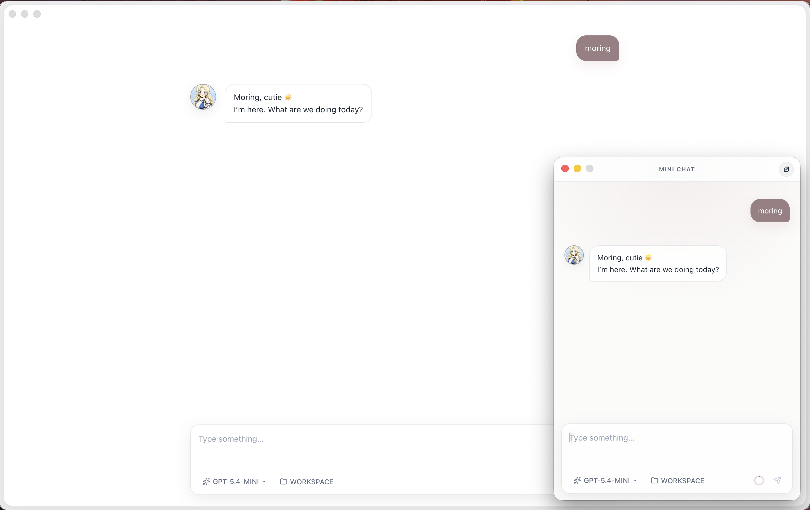

Default
Quiet confidence
Soft gradients, warm paper tones, and a composed assistant presence for focused engineering work.
Local-first desktop AI
Cometline combines a warm, cinematic desktop surface with a serious local runtime: streaming reasoning, visible tools, durable memory, and workspace-aware sessions for long-form technical work.
Loading latest release...
Not a disposable web tab. A desktop instrument for developers who want atmosphere, clarity, and control in the same place.
Personas
Cometline can present different character styles while keeping the experience elegant and cohesive. The app icons already hint at that flexibility.
Default
Soft gradients, warm paper tones, and a composed assistant presence for focused engineering work.
Alternative
The assistant can feel more personal or more theatrical while the system remains grounded in the same runtime and interface model.
Features
The interface stays airy and readable while exposing the things that matter when you are doing serious work with an agent.
Elegant composer
The composer feels soft and editorial, but it is still built for slash commands, tools, and long-running technical conversations.

Forking sessions
Branch a conversation into a different direction when you want to compare ideas, try another model, or split implementation paths.

Grouped by workspace
Sessions are organized around the codebase you are actually working in, so the assistant remains grounded instead of floating free.

Mini-window
Summon a compact chat window from anywhere on your desktop — ask a quick question or kick off a task without switching back to the main app.

Capabilities
Beyond the surface polish, Cometline ships memory, delegation, skills, and provider flexibility — all running on your machine with workspace-scoped boundaries.
Semantic memory
Relevant memories are retrieved before each turn and new facts are captured automatically — scoped to the workspace so preferences and decisions stay attached to the project they belong to.
Agent delegation
Delegate complex refactors and implementation tasks to OpenCode via ACP, with progress streamed back into your chat so you stay in the loop without leaving the desktop.
Agent Skills
Invoke reusable prompt templates with commands like /tdd and
/create-skill, plus custom skills discovered from your workspace and
global skill directories.
Multi-provider
Switch between Anthropic, OpenAI, OpenAI-compatible APIs, OpenCode Go, and ChatGPT Codex. Configure providers, API keys, and default model roles from Settings.
MCP tools
Connect Model Context Protocol servers to expose additional tools to the main agent — bring in databases, APIs, and custom integrations without forking the runtime.
Discord bot
Run CometMind as a Discord bot with per-thread sessions, persistent memory, @mention gating, and the same skill invocation you use in the desktop app.
Workflow
The desktop shell handles the atmosphere, UI, settings, and native feel.
The local runtime manages sessions, tools, persistence, memory, and streaming.
The provider layer normalizes model I/O and keeps vendor integrations coherent.
Cometline treats AI like software craft: something you inhabit, shape, and trust over time.
Download
The download buttons resolve to the newest DMG published on GitHub Releases, with a graceful fallback to the releases page if the API is unavailable.